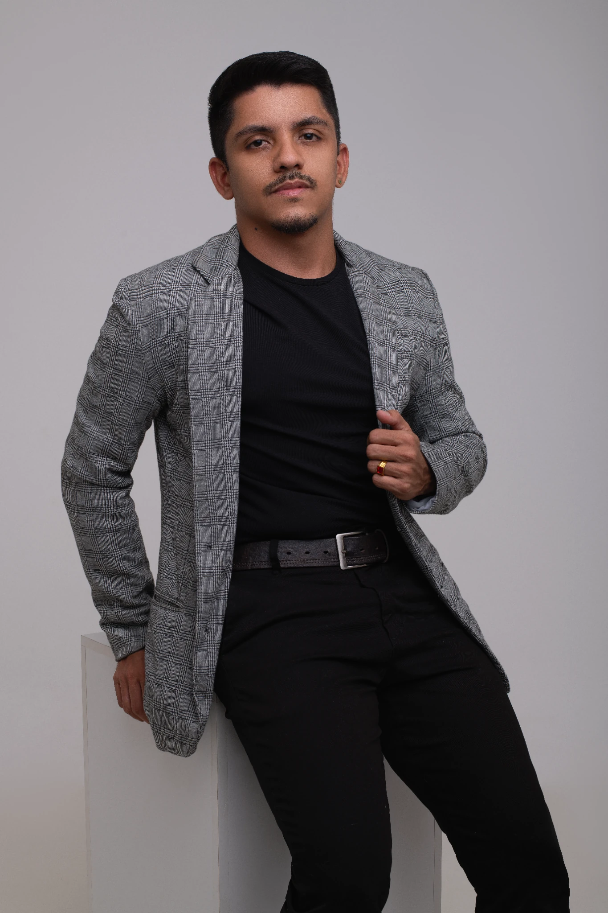

base
Gestão de Recursos Humanos
Gestão de pessoas, Departamento Pessoal, benefícios, remuneração e processos de RH.
Conecto Remuneração & Benefícios, People Analytics, visão jurídica e tecnologia para transformar desafios de pessoas em decisões mais estruturadas, seguras e orientadas por dados.
anos de experiência conectando operação, negócio e evolução contínua em Recursos Humanos.

Minha trajetória começou em Departamento Pessoal e evoluiu por folha, relações trabalhistas, benefícios, remuneração e People Analytics. Ao longo desse caminho, passei a olhar processos não apenas pela execução, mas também pelo risco, pelo impacto financeiro e pela qualidade das decisões que eles sustentam.
Sou formado em Gestão de Recursos Humanos e Direito, pós-graduado em Direito Trabalhista e Previdenciário e atualmente estudo Data Analytics. Essa combinação influencia diretamente minha forma de trabalhar: conectar pessoas, regras, negócio e evidências.
Sou apaixonado por tecnologia e pelo universo digital. Gosto de desafios que exigem curiosidade, aprendizado rápido e capacidade de transformar complexidade em algo útil: informação que vira decisão e processo que vira solução.
Minha formação não representa caminhos separados. Recursos Humanos, Direito e Dados se complementam na forma como analiso pessoas, processos, riscos e decisões de negócio.
Gestão de pessoas, Departamento Pessoal, benefícios, remuneração e processos de RH.
Relações de trabalho, legislação, contratos, riscos, compliance e visão jurídica aplicada ao negócio.
Aprofundamento técnico em temas diretamente conectados às relações de trabalho e à governança de pessoas.
Análise de dados, bancos de dados, visualização e ferramentas para transformar informação em evidência e decisão.
Cases selecionados que mostram como conecto contexto de negócio, dados, automação, experiência do usuário e tecnologia. Esta seção foi pensada para crescer junto com meu portfólio.
O projeto nasceu de uma solicitação da diretoria para ampliar a visibilidade sobre o fluxo de premiações, identificar gargalos, responsáveis e pontos de atenção, além de consolidar o impacto financeiro do processo em uma visão executiva.
Estruturei uma solução conectando a base operacional no ecossistema Microsoft 365 ao Power BI, com tratamento no Power Query, modelo semântico, indicadores gerenciais e atualização automatizada ao longo do dia.
Dificuldade de acompanhar status, gargalos, responsáveis e impacto financeiro das premiações.
Painel executivo para acompanhamento mensal do fluxo de premiações.
Base operacional em Excel / SharePoint no ecossistema Microsoft 365.
Power BI · Power Query · DAX · SharePoint · Excel · Power BI Service.
Volumes, valores, gargalos, responsáveis, status e detalhamento para tomada de decisão.
Levantamento da necessidade, estruturação da base, tratamento, indicadores, visualização e publicação.
Competência, elegibilidade, valor, status, responsável e observações.
Tratamento, padronização e preparação dos dados.
Campos, medidas e lógica analítica para os indicadores.
Dashboard executivo, filtros, gargalos e indicadores financeiros.
Publicação online e atualizações programadas ao longo do dia.
O processo de premiação dependia de acompanhamento manual recorrente: conferir prazos, identificar responsáveis, preparar comunicações e controlar o que já havia sido processado.
Desenvolvi um fluxo que executa diariamente, consulta uma base estruturada em Excel, percorre os registros, aplica uma condição de negócio, envia comunicações personalizadas pelo Outlook e atualiza a própria base após o processamento.
Base Excel com prazo, responsável, competência e tipo de premiação.
Execução diária + leitura da base + condição lógica.
E-mail personalizado e atualização do registro processado.
Power Automate · Excel · SharePoint · Outlook · Microsoft 365.
Fluxo em produção, executado de forma recorrente há meses.
Mapeamento, regra de negócio, construção, testes e implantação.
Prazos, responsáveis, competência e premiação.
Execução diária programada.
Leitura dos registros e validação da condição.
Comunicação dinâmica enviada ao responsável.
Registro atualizado após o processamento.

Recorrência, leitura da base, condição de negócio, envio do e-mail e atualização do registro.

O fluxo roda todos os dias para verificar quais registros precisam de comunicação.

A automação consulta uma tabela Excel hospedada no ecossistema Microsoft 365.

Destinatário, assunto, competência, premiação, área e prazo são alimentados pela base.

Detalhamento de uma execução concluída, com as etapas processadas pelo fluxo.

Execuções recorrentes bem-sucedidas evidenciam que a automação faz parte da rotina real.

Comunicações entregues aos responsáveis sem preparação manual a cada ciclo.
Informações sobre benefícios estavam espalhadas entre documentos, mensagens e diferentes canais. O resultado era uma experiência fragmentada para quem precisava apenas entender um benefício, acessar um serviço ou saber com quem falar.
A solução foi uma central digital organizada pela necessidade do colaborador, com busca, categorias, navegação mobile, conteúdo orientativo e direcionamento para atendimento.
Centraliza e organiza informações de benefícios em uma experiência única.
Colaboradores e áreas de RH/DP.
Busca, categorias, orientações, links e jornadas de benefícios.
Lovable · IA · UX/UI · Web responsiva.
Concepção, arquitetura da informação, UX, desenvolvimento e implantação.
Solução publicada e disponível online.

Centralização dos benefícios em uma experiência única e organizada.

Busca, pilares e caminhos de navegação pensados pela necessidade do colaborador.

Benefícios organizados em categorias para reduzir esforço de busca e dúvidas recorrentes.

Acesso responsivo para consulta rápida no celular, em diferentes contextos da jornada.
Uma trajetória construída em RH, com evolução para benefícios, remuneração, relações trabalhistas, People Analytics e transformação digital.
Atuação estratégica em Remuneração Total, Benefícios e People Analytics, conectando estrutura salarial, remuneração variável, orçamento, indicadores e tecnologia à tomada de decisão.
Atuação na implantação e consolidação da área de Benefícios, estruturando processos, políticas e governança para uma operação com mais de 9 mil colaboradores.
Gestão corporativa de benefícios em uma operação de grande escala, com governança financeira, indicadores e suporte aos RHs regionais.
Construí uma base ampla em folha, admissões, rescisões, encargos, ponto, benefícios, auditorias, fiscalizações, eSocial e atendimento a colaboradores e lideranças.
Antes de aplicar BI, automação e IA ao RH, eu já explorava outras formas de tecnologia e criação. Atuei com câmera, fotografia e edição de vídeos, estudei Web Design e desenvolvi sites em WordPress, incluindo e-commerce e projetos para hospedagem. Durante a pandemia, também empreendi no segmento de personalizados, uma experiência de reinvenção que fortaleceu minha capacidade de aprender, criar e executar. Fora do trabalho, gosto de viajar, conhecer novos lugares e experimentar novas tecnologias.
Competências que conecto à minha experiência de negócio para analisar, automatizar, estruturar e apoiar decisões.
Tenho interesse em desafios na interseção entre RH, Direito, dados, analytics, automação e transformação digital. Se quiser conversar sobre projetos, oportunidades ou trocar experiências, meu contato está aqui.